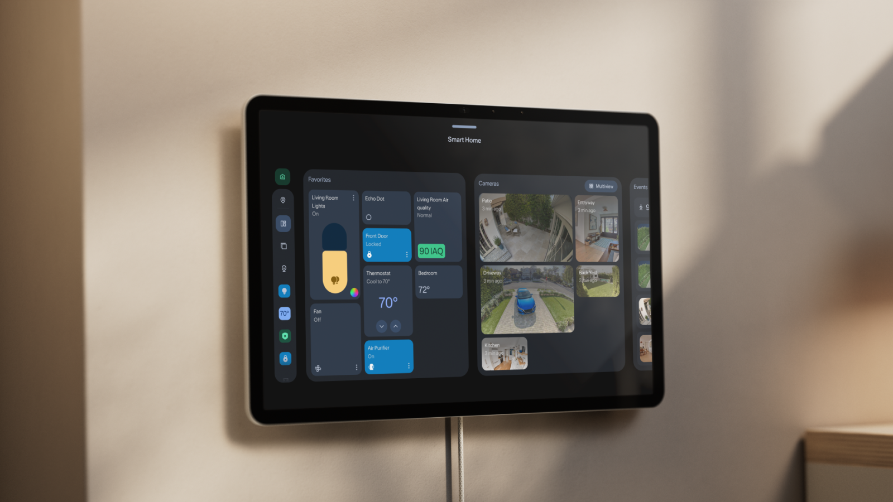

厨房智能硬件 · 家庭 AI 入口
亚马逊把家庭 AI 分给屏幕与音箱
Echo Show 16承接家庭日程与设备控制；带摄像头的音箱增加视觉理解，厨房入口有了新的分工。

10月29日，Yanko Design跟进亚马逊新一轮家用设备设计。官方原始发布在10月28日：Echo Show 16采用16英寸全高清屏，支持家庭日历、家务与餐食计划，也能作为智能家居控制面板。发布时该产品处于预售阶段。
同批Echo Studio with Home Camera为音箱加入摄像头。按亚马逊介绍，用户可以举起麦片盒，让Alexa识别并帮助补购。两种设备分别承担可视化组织和随手交互；部分能力需要Alexa+，不能据此推定已支持国内厨房设备或市场。
Amazon 官方新品介绍 · 2026-10-28（原始发布）Yanko Design 新品设计报道 · 2026-10-29日期核验：10月28日原始发布，10月29日最新设计报道；作为近24小时新闻跟进选入。